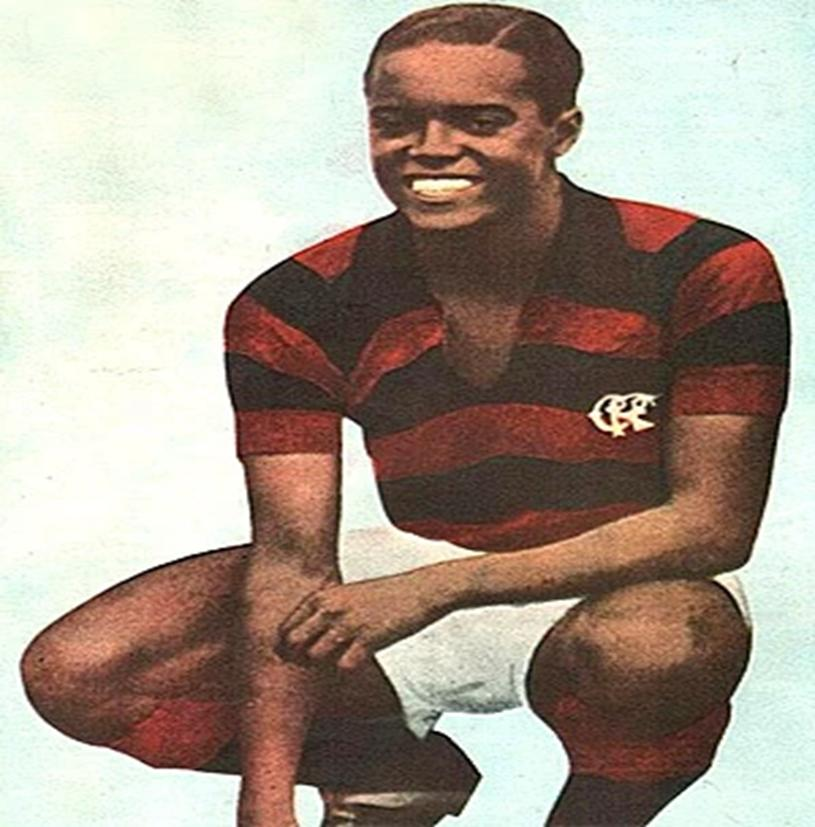
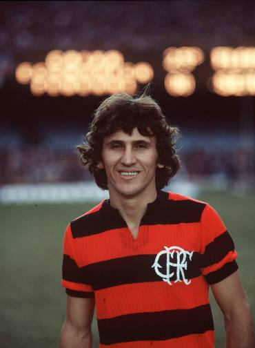
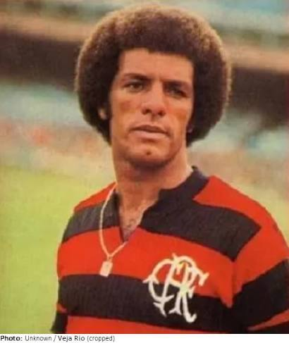
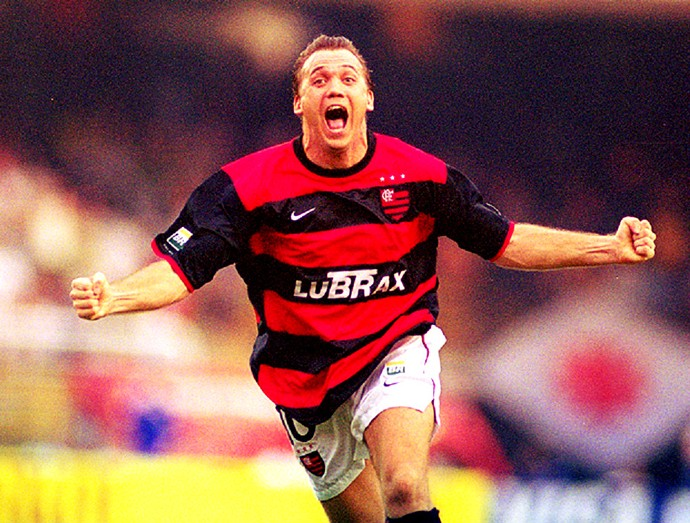
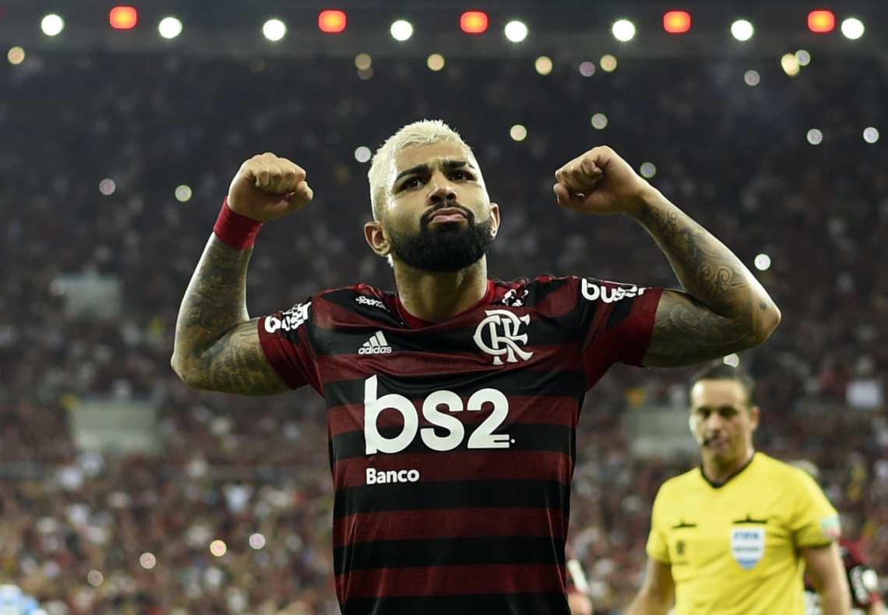

Copa Libertadores
1981, 2019, 2022 e 2025
A história do clube, dos títulos e dos jogadores que ficaram na memória da torcida.
Começar a visitaO Flamengo foi fundado em novembro de 1895, no Rio de Janeiro, como um clube de remo. O futebol só entrou na história do clube em 1911, quando um grupo de jogadores que saiu do Fluminense passou a fazer parte do Flamengo.
Desde então o time ganhou títulos estaduais, nacionais e internacionais e formou uma das maiores torcidas do país. As cores vermelha e preta, em listras horizontais, são a marca mais reconhecida do clube.
Neste museu você vai passar pelos títulos, pelos ídolos, por uma linha do tempo e por dois jogos que ficaram famosos.
1981, 2019, 2022 e 2025
1981
Vitória por 3 a 0 sobre o Liverpool.
2020 e 2023
1980, 1982, 1983, 1987, 1992, 2009, 2019, 2020 e 2025
1990, 2006, 2013, 2022 e 2024
2020, 2021 e 2025
O Flamengo é o maior campeão do estadual, com 40 títulos.
1914, 1915, 1920, 1921, 1925, 1927, 1939, 1942, 1943, 1944, 1953, 1954, 1955, 1963, 1965, 1972, 1974, 1978, 1979, 1979 (especial), 1981, 1986, 1991, 1996, 1999, 2000, 2001, 2004, 2007, 2008, 2009, 2011, 2014, 2017, 2019, 2020, 2021, 2024, 2025 e 2026
Cinco jogadores de épocas diferentes que a torcida rubro-negra não esquece.

Atacante · anos 1930 e 1940
Conhecido como Diamante Negro, foi uma das primeiras grandes estrelas do futebol brasileiro. Jogava com muita habilidade e ficou famoso pelo chute de bicicleta, que ajudou a popularizar.
Vestiu a camisa do Flamengo no fim dos anos 1930 e começo dos anos 1940. Foi o artilheiro da Copa do Mundo de 1938 com a seleção brasileira, e o torcedor da época ia ao estádio para vê-lo jogar.

Meia · camisa 10
Arthur Antunes Coimbra, o Galinho de Quintino, cresceu no Flamengo e estreou no time principal em 1971. É o maior artilheiro da história do clube, com mais de 500 gols.
Foi o líder da equipe que ganhou os Brasileiros de 1980, 1982 e 1983, a Libertadores e o Mundial de 1981. Também ficou famoso pelas cobranças de falta e pelos passes. Para muita gente, é o maior jogador que já vestiu a camisa rubro-negra.

Lateral e meio-campista
Leovegildo Lins da Gama Júnior chegou ao Flamengo em 1974. Começou como lateral e, com o tempo, passou a jogar no meio-campo, sempre com muita técnica e um passe muito bom.
Fez parte do time de 1981 e, depois de uma passagem pela Itália, voltou ao clube e ainda foi campeão brasileiro em 1992. Encerrou a carreira no Flamengo, em 1993, e é um dos jogadores que mais vezes vestiram a camisa do clube.

Meia · camisa 10
O sérvio Dejan Petković ficou marcado pela bola parada. Em 2001, fez o gol de falta na decisão do Campeonato Carioca contra o Vasco, um dos lances mais lembrados pela torcida.
Voltou ao clube em 2009 e foi um dos principais jogadores do time campeão brasileiro daquele ano, o primeiro título nacional depois de 17 anos.

Atacante · camisa 9
Gabriel Barbosa chegou em 2019 e virou o artilheiro daquela temporada histórica: foi o goleador da Libertadores e do Campeonato Brasileiro.
Na final da Libertadores, contra o River Plate, fez os dois gols da virada nos minutos finais. Com ele no time, o Flamengo ganhou também a Libertadores de 2022, a Copa do Brasil de 2022 e vários outros títulos.
Fundação do Flamengo, como clube de remo.
Jogadores que saíram do Fluminense se juntam ao clube e o futebol começa.
Primeiro título carioca de futebol.
Primeiro título brasileiro.
Campeão da Libertadores e do Mundial Interclubes.
Vence a Copa União, título que o clube conta como Brasileiro.
Volta a ganhar o Campeonato Brasileiro.
Libertadores e Brasileirão no mesmo ano.
Libertadores e Copa do Brasil.
Libertadores e Brasileirão de novo.
13 de dezembro de 1981, Tóquio
Na final do Mundial Interclubes, o Flamengo venceu o Liverpool por 3 a 0. Nunes fez dois gols e Adílio fez o outro. Até hoje é o jogo mais lembrado da história do clube.
23 de novembro de 2019, Lima
O Flamengo perdia a final da Libertadores por 1 a 0 até os 43 minutos do segundo tempo. Gabigol marcou duas vezes e o time voltou a ser campeão continental depois de 38 anos.